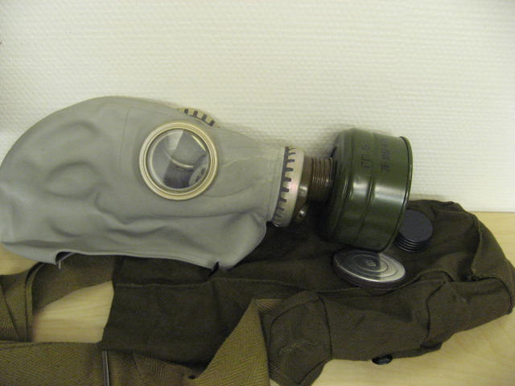

Протигаз цивільний модель 5(ЦП-5) - засіб індивідуального захисту фільтруючого типу радянського і російського виробництва, призначений для захисту органів дихання, очей, шкіри голови. Випускався з 1961 по 1989 рік. Він призначається для захисту від отруйних речовин, мікробів і токсинів. Принцип захисної дії даного засобу захисту ґрунтується на тому, що використовуване для дихання заражене повітря попередньо очищається від шкідливих домішок за допомогою спеціальних поглиначів і фільтрів.
Відмінністю протигаза ЦП-5 від інших моделей є те, що лицьова частина протигаза не комплектується сполучною гофрованою трубкою, а безпосередньо приєднується до протигазової коробки. В комплект протигазу входять ФПК (фільтруючо-поглинаюча коробка) з маркуванням ГП-5, лицьова частина ШМ-62 або ШМ-62У (стоншення), сумка для носіння та коробка з незапотіваючими плівками (НП). Протигаз ЦП-5 призначений для використання цивільним населенням. Протигаз ЦП-5 випускається в п'яти розмірах: 0, 1, 2, 3, 4 (у маски ШМ-62У — 0у, 1у, 2у, 3у, 4у). Маркування шолом-масок ШМ-62 ии ШМ-62У нанесена у вигляді опуклого відбитка від прес-форми: у підборіддя частини в колі цифрою вказаний ріст шолом-маски, дві останні цифри року виготовлення, квартал (точками), умовне позначення підприємства-виготовлювача (літерою), номер прес-форми. Для підбору необхідного зростання шолом-маски потрібно виміряти голову по замкнутій лінії, що проходить через верхівку, щоки і підборіддя. Виміри округлюються до 0,5 см. При величині виміру до 63 см беруть нульовий ріст, від 63,5 до 65,5 см — перший, від 66 до 68 см — другий, від 68,5 до 70,5 см — третій, від 71 см і більше — четвертий. З урахуванням недоліків попередніх моделей в шолом-маску протигаза ЦП-5 були внесені деякі поліпшення. Після доопрацювання протигаз набув назву ЦП-5М (військовий аналог — ПМГ-2, різниця тільки в ФПК), а шолом-маска стала називатися ШМ-66МУ. Маркування ШМ-66МУ повністю відповідає маркуванню ШМ-62У. Були внесені наступні зміни:Змінена конструкція лицьової частини шолом-маски що дозволило значно підвищити зручність носіння. Покращена конструкція переговорної мембрани. Була дороблена і підвищена надійність системи клапанів вдиху і видиху. Це було досягнуто за рахунок зміни форми їх пелюсток, які тепер забезпечують більш швидке і надійне замикання камер клапанної коробки. І перешкоджає їх деформації в процесі старіння.